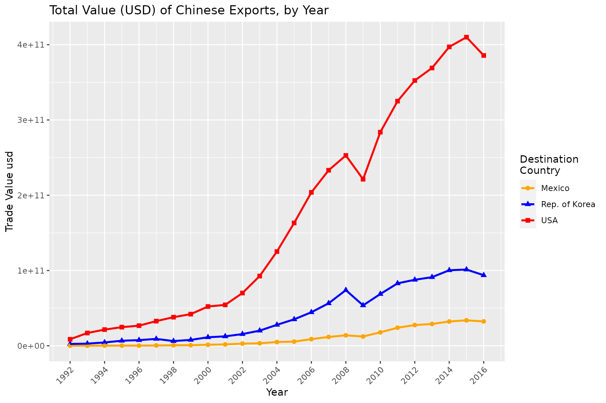
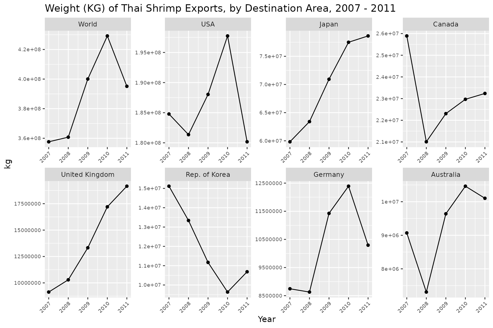

Package information
API wrapper for the UN Comtrade Database, which features inter-country trade data dating back to the early 1990’s. Full API documentation can be found here. This package allows users to interact with the API directly from R, and features functions for making queries and importing data.
Install and load comtradr
Install from CRAN:
install.packages("comtradr")Or install the development version from GitHub:
devtools::install_github("ChrisMuir/comtradr")Load comtradr
Making API calls
Lets say we want to get data on all imports into the United States from Germany, France, Japan, and Mexico, for all years.
q <- ct_search(reporters = "USA",
partners = c("Germany", "France", "Japan", "Mexico"),
trade_direction = "imports")API calls return a tidy data frame.
str(q)
#> 'data.frame': 108 obs. of 35 variables:
#> $ classification : chr "H5" "H5" "H5" "H5" ...
#> $ year : int 2017 2017 2017 2017 2012 2012 2012 2012 2013 2013 ...
#> $ period : int 2017 2017 2017 2017 2012 2012 2012 2012 2013 2013 ...
#> $ period_desc : chr "2017" "2017" "2017" "2017" ...
#> $ aggregate_level : int 0 0 0 0 0 0 0 0 0 0 ...
#> $ is_leaf_code : int 0 0 0 0 0 0 0 0 0 0 ...
#> $ trade_flow_code : int 1 1 1 1 1 1 1 1 1 1 ...
#> $ trade_flow : chr "Import" "Import" "Import" "Import" ...
#> $ reporter_code : int 842 842 842 842 842 842 842 842 842 842 ...
#> $ reporter : chr "USA" "USA" "USA" "USA" ...
#> $ reporter_iso : chr "USA" "USA" "USA" "USA" ...
#> $ partner_code : int 251 276 392 484 251 276 392 484 251 276 ...
#> $ partner : chr "France" "Germany" "Japan" "Mexico" ...
#> $ partner_iso : chr "FRA" "DEU" "JPN" "MEX" ...
#> $ second_partner_code : logi NA NA NA NA NA NA ...
#> $ second_partner : chr NA NA NA NA ...
#> $ second_partner_iso : chr NA NA NA NA ...
#> $ customs_proc_code : chr NA NA NA NA ...
#> $ customs : chr NA NA NA NA ...
#> $ mode_of_transport_code: chr NA NA NA NA ...
#> $ mode_of_transport : chr NA NA NA NA ...
#> $ commodity_code : chr "TOTAL" "TOTAL" "TOTAL" "TOTAL" ...
#> $ commodity : chr "All Commodities" "All Commodities" "All Commodities" "All Commodities" ...
#> $ qty_unit_code : int 1 1 1 1 1 1 1 1 1 1 ...
#> $ qty_unit : chr "No Quantity" "No Quantity" "No Quantity" "No Quantity" ...
#> $ alt_qty_unit_code : logi NA NA NA NA NA NA ...
#> $ alt_qty_unit : chr NA NA NA NA ...
#> $ qty : int 0 0 0 0 NA NA NA NA NA NA ...
#> $ alt_qty : logi NA NA NA NA NA NA ...
#> $ netweight_kg : int 0 0 0 0 NA NA NA NA NA NA ...
#> $ gross_weight_kg : logi NA NA NA NA NA NA ...
#> $ trade_value_usd : num 5.00e+10 1.20e+11 1.40e+11 3.17e+11 4.25e+10 ...
#> $ cif_trade_value_usd : logi NA NA NA NA NA NA ...
#> $ fob_trade_value_usd : logi NA NA NA NA NA NA ...
#> $ flag : int 4 4 4 4 0 0 0 0 0 0 ...
#> - attr(*, "url")= chr "https://comtrade.un.org/api/get?max=50000&type=C&freq=A&px=HS&ps=all&r=842&p=276%2C251%2C392%2C484&rg=1&cc=TOTA"| __truncated__
#> - attr(*, "time_stamp")= POSIXct[1:1], format: "2018-05-05 13:59:34"
#> - attr(*, "req_duration")= num 32.1Here are a few more examples to show the different parameter options:
Limit the search range to shipments between 2010 and 2014.
q <- ct_search(reporters = "USA",
partners = c("Germany", "France", "Japan", "Mexico"),
trade_direction = "imports",
start_date = 2010,
end_date = 2014)By default, the return data is in yearly amounts. We can pass "monthly" to arg freq to return data in monthly amounts, however the API limits each “monthly” query to a single year.
# Get all monthly data for a single year (API max of 12 months per call).
q <- ct_search(reporters = "USA",
partners = c("Germany", "France", "Japan", "Mexico"),
trade_direction = "imports",
start_date = 2012,
end_date = 2012,
freq = "monthly")
# Get monthly data for a specific span of months (API max of five months per call).
q <- ct_search(reporters = "USA",
partners = c("Germany", "France", "Japan", "Mexico"),
trade_direction = "imports",
start_date = "2012-03",
end_date = "2012-07",
freq = "monthly")Countries passed to parameters reporters and partners must be spelled as they appear in the Comtrade country reference table. Function ct_country_lookup allows us to query the country reference table.
ct_country_lookup("korea", "reporter")
#> [1] "Dem. People's Rep. of Korea" "Rep. of Korea"
ct_country_lookup("bolivia", "partner")
#> [1] "Bolivia (Plurinational State of)"
q <- ct_search(reporters = "Rep. of Korea",
partners = "Bolivia (Plurinational State of)",
trade_direction = "all")Search trade related to specific commodities (say, tomatoes). We can query the Comtrade commodity reference table to see all of the different commodity descriptions available for tomatoes.
ct_commodity_lookup("tomato")
#> $tomato
#> [1] "0702 - Tomatoes; fresh or chilled"
#> [2] "070200 - Vegetables; tomatoes, fresh or chilled"
#> [3] "2002 - Tomatoes; prepared or preserved otherwise than by vinegar or acetic acid"
#> [4] "200210 - Vegetable preparations; tomatoes, whole or in pieces, prepared or preserved otherwise than by vinegar or acetic acid"
#> [5] "200290 - Vegetable preparations; tomatoes, (other than whole or in pieces), prepared or preserved otherwise than by vinegar or acetic acid"
#> [6] "200950 - Juice; tomato, unfermented, not containing added spirit, whether or not containing added sugar or other sweetening matter"
#> [7] "210320 - Sauces; tomato ketchup and other tomato sauces"If we want to search for shipment data on all of the commodity descriptions listed, then we can simply adjust the parameters for ct_commodity_lookup so that it will return only the codes, which can then be passed along to ct_search.
tomato_codes <- ct_commodity_lookup("tomato",
return_code = TRUE,
return_char = TRUE)
q <- ct_search(reporters = "USA",
partners = c("Germany", "France", "Mexico"),
trade_direction = "all",
commod_codes = tomato_codes)On the other hand, if we wanted to exclude juices and sauces from our search, we can pass a vector of the relevant codes to the API call.
API search metadata
In addition to the trade data, each API return object contains metadata as attributes.
# The url of the API call.
attributes(q)$url
#> [1] "https://comtrade.un.org/api/get?max=50000&type=C&freq=A&px=HS&ps=all&r=842&p=276%2C251%2C392%2C484&rg=1&cc=TOTAL&fmt=json&head=H"
# The date-time of the API call.
attributes(q)$time_stamp
#> [1] "2018-05-05 13:59:34 UTC"
# The total duration of the API call, in seconds.
attributes(q)$req_duration
#> [1] 32.08056More on the lookup functions
Functions ct_country_lookup and ct_commodity_lookup are both able to take multiple search terms as input.
ct_country_lookup(c("Belgium", "vietnam", "brazil"), "reporter")
#> [1] "Belgium" "Belgium-Luxembourg"
#> [3] "Brazil" "Fmr Dem. Rep. of Vietnam"
#> [5] "Fmr Rep. of Vietnam"
ct_commodity_lookup(c("tomato", "trout"), return_char = TRUE)
#> [1] "0702 - Tomatoes; fresh or chilled"
#> [2] "070200 - Vegetables; tomatoes, fresh or chilled"
#> [3] "2002 - Tomatoes; prepared or preserved otherwise than by vinegar or acetic acid"
#> [4] "200210 - Vegetable preparations; tomatoes, whole or in pieces, prepared or preserved otherwise than by vinegar or acetic acid"
#> [5] "200290 - Vegetable preparations; tomatoes, (other than whole or in pieces), prepared or preserved otherwise than by vinegar or acetic acid"
#> [6] "200950 - Juice; tomato, unfermented, not containing added spirit, whether or not containing added sugar or other sweetening matter"
#> [7] "210320 - Sauces; tomato ketchup and other tomato sauces"
#> [8] "030191 - Fish; live, trout (salmo trutta, salmo gairdneri, salmo clarki, salmo aguabonita, salmo gilae)"
#> [9] "030211 - Fish; trout (salmo trutta, salmo gairdneri, salmo clarki, salmo aguabonita, salmo gilae), fresh or chilled (excluding fillets, livers, roes and other fish meat of heading no. 0304)"
#> [10] "030314 - Fish; frozen, trout (Salmo trutta, Oncorhynchus mykiss, Oncorhynchus clarki, Oncorhynchus aguabonita, Oncorhynchus gilae, Oncorhynchus apache and Oncorhynchus chrysogaster), excluding fillets, meat of 0304, and edible fish offal of 0303.91 to 0303.99"
#> [11] "030321 - Fish; trout (salmo trutta, salmo gairdneri, salmo clarki, salmo aguabonita, salmo gilae), frozen (excluding fillets, livers, roes and other fish meat of heading no. 0304)"
#> [12] "030442 - Fish fillets; fresh or chilled, trout (Salmo trutta, Oncorhynchus mykiss, Oncorhynchus clarki, Oncorhynchus aguabonita, Oncorhynchus gilae, Oncorhynchus apache and Oncorhynchus chrysogaster)"
#> [13] "030482 - Fish fillets; frozen, trout (Salmo trutta, Oncorhynchus mykiss, Oncorhynchus clarki, Oncorhynchus aguabonita, Oncorhynchus gilae, Oncorhynchus apache and Oncorhynchus chrysogaster)"
#> [14] "030543 - Fish; smoked, whether or not cooked before or during smoking, trout (Salmo trutta, Oncorhynchus mykiss/clarki/aguabonita/gilae/apache/chrysogaster), includes fillets, but excludes edible fish offal"ct_commodity_lookup can return a vector (as seen above) or a named list, using parameter return_char
ct_commodity_lookup(c("tomato", "trout"), return_char = FALSE)
#> $tomato
#> [1] "0702 - Tomatoes; fresh or chilled"
#> [2] "070200 - Vegetables; tomatoes, fresh or chilled"
#> [3] "2002 - Tomatoes; prepared or preserved otherwise than by vinegar or acetic acid"
#> [4] "200210 - Vegetable preparations; tomatoes, whole or in pieces, prepared or preserved otherwise than by vinegar or acetic acid"
#> [5] "200290 - Vegetable preparations; tomatoes, (other than whole or in pieces), prepared or preserved otherwise than by vinegar or acetic acid"
#> [6] "200950 - Juice; tomato, unfermented, not containing added spirit, whether or not containing added sugar or other sweetening matter"
#> [7] "210320 - Sauces; tomato ketchup and other tomato sauces"
#>
#> $trout
#> [1] "030191 - Fish; live, trout (salmo trutta, salmo gairdneri, salmo clarki, salmo aguabonita, salmo gilae)"
#> [2] "030211 - Fish; trout (salmo trutta, salmo gairdneri, salmo clarki, salmo aguabonita, salmo gilae), fresh or chilled (excluding fillets, livers, roes and other fish meat of heading no. 0304)"
#> [3] "030314 - Fish; frozen, trout (Salmo trutta, Oncorhynchus mykiss, Oncorhynchus clarki, Oncorhynchus aguabonita, Oncorhynchus gilae, Oncorhynchus apache and Oncorhynchus chrysogaster), excluding fillets, meat of 0304, and edible fish offal of 0303.91 to 0303.99"
#> [4] "030321 - Fish; trout (salmo trutta, salmo gairdneri, salmo clarki, salmo aguabonita, salmo gilae), frozen (excluding fillets, livers, roes and other fish meat of heading no. 0304)"
#> [5] "030442 - Fish fillets; fresh or chilled, trout (Salmo trutta, Oncorhynchus mykiss, Oncorhynchus clarki, Oncorhynchus aguabonita, Oncorhynchus gilae, Oncorhynchus apache and Oncorhynchus chrysogaster)"
#> [6] "030482 - Fish fillets; frozen, trout (Salmo trutta, Oncorhynchus mykiss, Oncorhynchus clarki, Oncorhynchus aguabonita, Oncorhynchus gilae, Oncorhynchus apache and Oncorhynchus chrysogaster)"
#> [7] "030543 - Fish; smoked, whether or not cooked before or during smoking, trout (Salmo trutta, Oncorhynchus mykiss/clarki/aguabonita/gilae/apache/chrysogaster), includes fillets, but excludes edible fish offal"For ct_commodity_lookup, if any of the input search terms return zero results and parameter verbose is set to TRUE, a warning will be printed to console (set verbose to FALSE to turn off this feature).
ct_commodity_lookup(c("tomato", "sldfkjkfdsklsd"), verbose = TRUE)
#> Warning: There were no matching results found for inputs: sldfkjkfdsklsd
#> $tomato
#> [1] "0702 - Tomatoes; fresh or chilled"
#> [2] "070200 - Vegetables; tomatoes, fresh or chilled"
#> [3] "2002 - Tomatoes; prepared or preserved otherwise than by vinegar or acetic acid"
#> [4] "200210 - Vegetable preparations; tomatoes, whole or in pieces, prepared or preserved otherwise than by vinegar or acetic acid"
#> [5] "200290 - Vegetable preparations; tomatoes, (other than whole or in pieces), prepared or preserved otherwise than by vinegar or acetic acid"
#> [6] "200950 - Juice; tomato, unfermented, not containing added spirit, whether or not containing added sugar or other sweetening matter"
#> [7] "210320 - Sauces; tomato ketchup and other tomato sauces"
#>
#> $sldfkjkfdsklsd
#> character(0)API rate limits
The Comtrade API imposes rate limits on both guest users and premium users. comtradr features automated throttling of API calls to ensure the user stays within the limits defined by Comtrade. Below is a breakdown of those limits, API docs on these details can be found here.
- Without user token: 1 request per second, 100 requests per hour.
- With valid user token: 1 request per second, 10,000 requests per hour.
In addition to these rate limits, the API imposes some limits on parameter combinations.
- Between args
reporters,partners, and the query date range, only one of these three may use the catch-all input “All”. - For the same group of three (
reporters,partners, date range), if the input is not “All”, then the maximum number of input values for each is five. For date range, if not using “All”, then thestart_dateandend_datemust not span more than five months or five years. There is one exception to this rule, if argfreqis “monthly”, then a single year can be passed tostart_dateandend_dateand the API will return all of the monthly data for that year. - For arg
commod_codes, if not using input “All”, then the maximum number of input values is 20 (although “All” is always a valid input).
Additionally, the maximum number of returned records from a single query without a token is 50,000. With a token, that number is 250,000.
comtradr features a few functions for working with the API rate limits and tokens.
-
ct_register_token()allows the user to set an API token within the package environment. -
ct_get_remaining_hourly_queries()will return the number of remaining queries for the current hour. -
ct_get_reset_time()will return the date/time in which the current hourly time limit will reset, as aPOSIXctobject.
Package Data
comtradr ships with a few different package data objects, and functions for interacting with and using the package data.
Country/Commodity Reference Tables
As explained previously, making API calls with comtradr often requires the user to query the country reference table and/or the commodity reference table (this is done using functions ct_country_lookup and ct_commodity_lookup). Both of these reference tables are generated by the UN Comtrade, and are updated roughly once a year. Since they’re updated infrequently, both tables are saved as cached data objects within the comtradr package, and are referenced by the package functions when needed.
comtradr features a function, ct_update_databases, for checking the Comtrade website for updates to either reference table. If updates are found, the function will download the updated table, save it to the package directory, and make it available during the current R session. It will also print a message indicating whether updates were found, like so:
ct_update_databases()
#> All DB's are up to date, no action requiredIf any updates are found, the message will state which reference table(s) were updated.
The user may force download of both reference tables (regardless of whether updates exist) by using arg force = TRUE within function ct_update_databases. This is useful in the event that either reference table file is deleted or removed from the package directory. If this is the case, and either reference table file is not found upon package load, then any subsequent comtradr functions that require the use of a reference table will result in an error, with the error message prompting the user to run ct_update_databases(force = TRUE).
Additionally, the Comtrade API features a number of different commodity reference tables, based on different trade data classification schemes (for more details, see this page from the API docs). comtradr ships with the commodity table for the “Harmonized System”, or “HS”, scheme. The user may download any of the available commodity tables by specifying arg commodity_type within function ct_update_databases (e.g., ct_update_databases(commodity_type = "SITC") will download the commodity table that follows the “Standard International Trade Classification” scheme). Doing this will replace the commodity table on file with the one specified. To see the classification scheme of the commodity table currently on file, use ct_commodity_db_type.
ct_commodity_db_type()
#> [1] "HS"“Polished” Column Headers
ct_pretty_cols is a named vector of column header values that provide the option of using column headers that are more polished and human-friendly than those returned by the API function ct_search. The polished column headers may be useful when plotting the Comtrade data, or for use in publication tables. The data can be accessed directly by using data("ct_pretty_cols"), but there is also a function for applying the polished headers to comtradr data frames, ct_use_pretty_cols. Below is a quick demonstration.
# Column headers returned from function ct_search
colnames(q)
#> [1] "classification" "year" "period"
#> [4] "period_desc" "aggregate_level" "is_leaf_code"
#> [7] "trade_flow_code" "trade_flow" "reporter_code"
#> [10] "reporter" "reporter_iso" "partner_code"
#> [13] "partner" "partner_iso" "second_partner_code"
#> [16] "second_partner" "second_partner_iso" "customs_proc_code"
#> [19] "customs" "mode_of_transport_code" "mode_of_transport"
#> [22] "commodity_code" "commodity" "qty_unit_code"
#> [25] "qty_unit" "alt_qty_unit_code" "alt_qty_unit"
#> [28] "qty" "alt_qty" "netweight_kg"
#> [31] "gross_weight_kg" "trade_value_usd" "cif_trade_value_usd"
#> [34] "fob_trade_value_usd" "flag"
# Apply polished column headers
q <- ct_use_pretty_cols(q)
# Print new column headers.
colnames(q)
#> [1] "Classification" "Year"
#> [3] "Period" "Period Description"
#> [5] "Aggregate Level" "Is Leaf Code"
#> [7] "Trade Flow Code" "Trade Flow"
#> [9] "Reporter Code" "Reporter Country"
#> [11] "Reporter ISO" "Partner Code"
#> [13] "Partner Country" "Partner ISO"
#> [15] "Second Partner Code" "Second Partner Country"
#> [17] "Second Partner ISO" "Customs Procurement Code"
#> [19] "Customs" "Mode of Transportation Code"
#> [21] "Mode of Transportation" "Commodity Code"
#> [23] "Commodity" "Quantity Unit Code"
#> [25] "Quantity Unit" "Alternate Quantity Unit Code"
#> [27] "Alternate Quantity Unit" "Quantity"
#> [29] "Alternate Quantity" "Net Weight kg"
#> [31] "Gross Weight kg" "Trade Value usd"
#> [33] "CIF Trade Value usd" "FOB Trade Value usd"
#> [35] "Flag"Visualize
Once the data is collected, we can use it to create some basic visualizations.
Plot 1: Plot total value (USD) of Chinese exports to Mexico, South Korea and the United States, by year.
# Comtrade api query.
df <- ct_search(reporters = "China",
partners = c("Rep. of Korea", "USA", "Mexico"),
trade_direction = "exports")
library(ggplot2)
# Apply polished col headers.
df <- ct_use_pretty_cols(df)
# Create plot.
ggplot(df, aes(Year, `Trade Value usd`, color = factor(`Partner Country`),
shape = factor(`Partner Country`))) +
geom_point(size = 2) +
geom_line(size = 1) +
scale_x_continuous(limits = c(min(df$Year), max(df$Year)),
breaks = seq.int(min(df$Year), max(df$Year), 2)) +
scale_color_manual(values = c("orange", "blue", "red"),
name = "Destination\nCountry") +
scale_shape_discrete(name = "Destination\nCountry") +
labs(title = "Total Value (USD) of Chinese Exports, by Year") +
theme(axis.text.x = element_text(angle = 45, vjust = 1, hjust = 1))
Plot 2: Plot the top eight destination countries/areas of Thai shrimp exports, by weight (KG), for 2007 - 2011.
# First, collect commodity codes related to shrimp.
shrimp_codes <- ct_commodity_lookup("shrimp",
return_code = TRUE,
return_char = TRUE)
# Comtrade api query.
df <- ct_search(reporters = "Thailand",
partners = "All",
trade_direction = "exports",
start_date = 2007,
end_date = 2011,
commod_codes = shrimp_codes)
library(ggplot2)
library(dplyr)
# Apply polished col headers.
df <- ct_use_pretty_cols(df)
# Create country specific "total weight per year" dataframe for plotting.
plotdf <- df %>%
group_by_(.dots = c("`Partner Country`", "Year")) %>%
summarise(kg = as.numeric(sum(`Net Weight kg`, na.rm = TRUE))) %>%
as_data_frame()
# Get vector of the top 8 destination countries/areas by total weight shipped
# across all years, then subset plotdf to only include observations related
# to those countries/areas.
top8 <- plotdf %>%
group_by(`Partner Country`) %>%
summarise(kg = as.numeric(sum(kg, na.rm = TRUE))) %>%
top_n(8, kg) %>%
arrange(desc(kg)) %>%
.[["Partner Country"]]
plotdf <- plotdf %>% filter(`Partner Country` %in% top8)
# Create plots (y-axis is NOT fixed across panels, this will allow us to ID
# trends over time within each country/area individually).
qplot(Year, kg, data = plotdf) +
geom_line(data = plotdf[plotdf$`Partner Country` %in% names(which(table(plotdf$`Partner Country`) > 1)), ]) +
xlim(min(plotdf$Year), max(plotdf$Year)) +
labs(title = "Weight (KG) of Thai Shrimp Exports, by Destination Area, 2007 - 2011") +
theme(axis.text.x = element_text(angle = 45, vjust = 1, hjust = 1),
axis.text = element_text(size = 7)) +
facet_wrap(~factor(`Partner Country`, levels = top8), scales = "free", nrow = 2, ncol = 4)